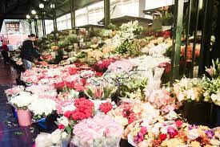

Nice & Lovely flowers brings you flowers and floral hampers and gifts beyond your wildest dreams.
Send flowers to anywhere in South Africa with domestic offices all over, delivering flowers on time with Nice & Loverly flowers is never a problem.
Our international reach stretches as far as UK, Australia, USA and the rest of the globe.
No need to take time off work and visit florist's shops, our selection of flowers is unmatched. It's the ease of flower delivery and sending flowers straight to your doorstep.
Floral arrangements and flowers are delivered same day if ordered before 12 noon. Gift deliveries vary depending on area which range from old school Pretoria and London all the way through to the windy cities of Cape Town and Sydney.
Even more pleasurable is the fact that if you do live in Port Elizabeth, Bloemfontein, Johannesburg, Pietermaritzburg, Manchester or Melbourne you can now have the very best in floral arrangements and gifts, and reap the same rewards as you would if you resided in one of the larger spots in South Africa, the UK and Australia. You have most certainly come to the right place and can buy flowers and gifts online anytime.
A 100% guarantee is offered on all our flowers, gifts and roses. You no longer need to visit florists in Johannesburg, Brisbane, Birmingham, East London or Florists in Durban
.We make buying flowers a pleasure.Our store does cater for occasions like Valentines Day, Mother's Day, Father's Day, Teacher's Day, Grandparents Day, Bosses Day, Christmas, Secretary's Day, Birthdays, Anniversaries and more.
the prices of flowers vary according to Weight & texture. Prices Start from R59.99Make someone's day by ordering a bunch of fresh cut flowers online. Browse our beautiful collection of flowers and plants.
| Stock Availability | Barcode | Weight | targeted for |
|---|---|---|---|
| 35 | 5449000265609 | 850g | Any Occasion |